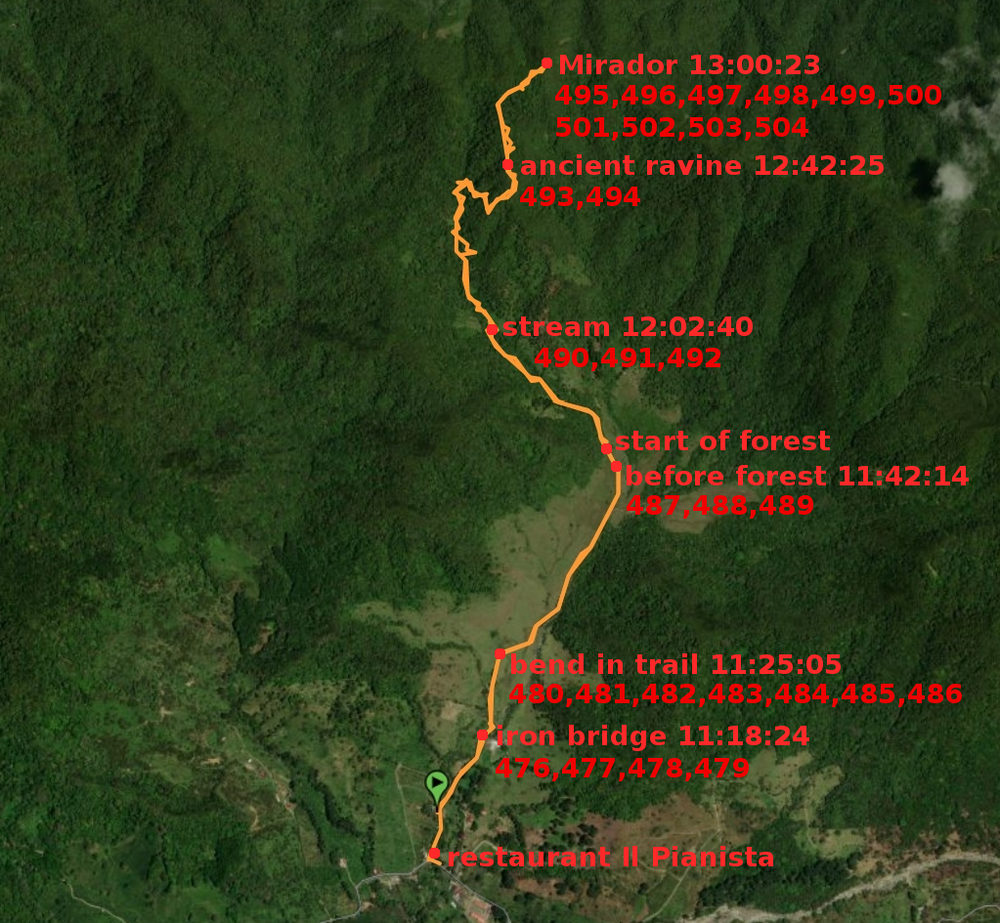

In search of the place in photo 491
Photo 491
The place where the photo was taken was identified by someone called Thiago Fernandes, a user of the collection Juanswers for Kris Kremers & Lisanne Froon. Later it was analysed by Alexander Herbst, another user of the collection (see here). I think the starting point of the discovery was the Break Free film (At 23:09 minutes photo 491 is shown. Lisanne's brother is getting across a stream near a tree trunk at 23:15 minutes. You can find the Break Free film in 8 parts with English subtitles on the Cold Case blog [search for "Break free, the full program"]. In the 6th part at 0:44 photo 491 is shown, at 0:50 Lisanne's brother is getting across a stream near a tree trunk.) The stream and the tree trunk are distinctive elements of the place.
Here is a map where I marked the place (491 marks the place):
Photo 6-1
There are a few places on the above map. At some of them, Kris and Lisanne took photos. If there is a number after the name of a place, that means that a photo was taken at the place. For example, photo 499 was taken at the Mirador. The black rectangle contains the area near the place in photo 491. The magnified map of the area is on the right. You can find the numbers of photos here.
What are the exact coordinates of the place? These are some guidelines how to find them. The place occurs multiple times in films on youtube. On the way up the El Pianista trail, the place occurs after a hut:
film 1 (1:02 the hut, 1:29 the place in photo 491)
film 2 (1:13 the hut, 1:15 the place in photo 491)
Other films where the place occurs:
film 3 (1:58 the place in photo 491 on the way up the trail, 3:09 the same place on the way down the trail)
film 4 (2:33 the place in photo 491)
So we are looking for a stream or river after the hut.
The coordinates of the hut are in the following photo:

Photo 6-2
Someone called the hut "an Indian house". These are the coordinates of a place near the hut:
8.826269, -82.425636 near Indian house (nabij Indian house in Dutch)

Photo 6-3
The following river occurs after the hut in the above photo:
8.827045, -82.426216 steep side river not directly along path ("steile zijde rivier niet direct langs pad" in Dutch).
Just before the point on the trail indicating the hut occurs another river:
8.826020, -82.425652 dead-end river ("doodlopend rivier" in Dutch)
Of the two descriptions, the first is a better match in my opinion. I assumed that the first pair of coordinates is the one for the place in photo 491. The position is shown on the above map (photo 6-1). The distance 166 m between the point "near Indian house" and the point "steep side river not directly along path" is shown on the right as well. I think the place where photo 491 was taken occurs somewhere inside the black rectangle in photo 6-1. That is my interpretation of the information that I found.
Update 12 March 2021
I found a photo that shows a place similar to the one where photo 491 was taken.
These are the coordinates of the place where the photo was taken:
8.825974,-82.425622
according to EXIF data.
The distance between the place and the place described as "dead-end river" (see above) is about 6 m. You can measure the distance between two pairs of coordinates here. A similar shot to the photo is in the film (1:15). So the place in the photo is a better candidate for the place in photo 491.
The place is marked by the word "stream" on the following map:
